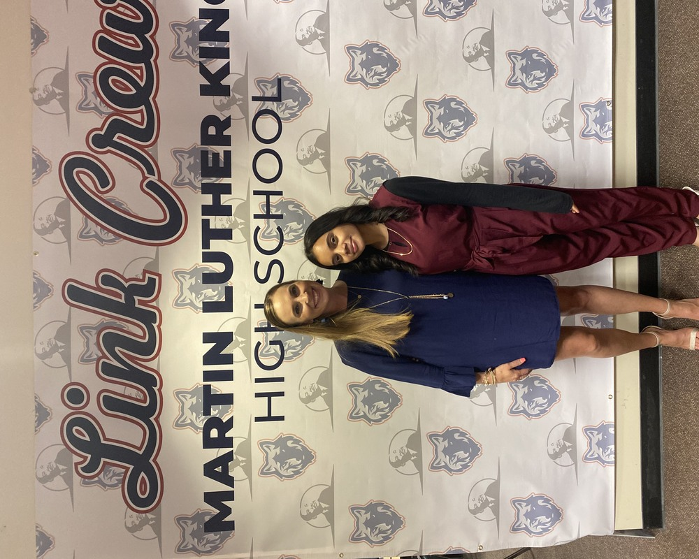
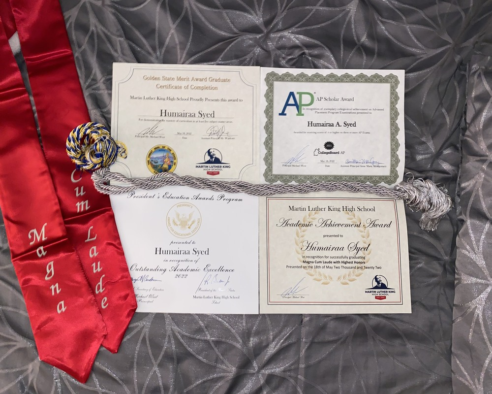
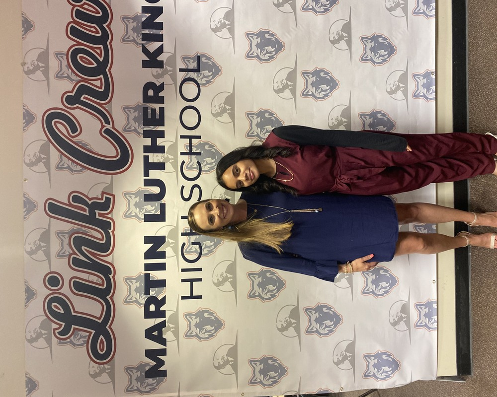
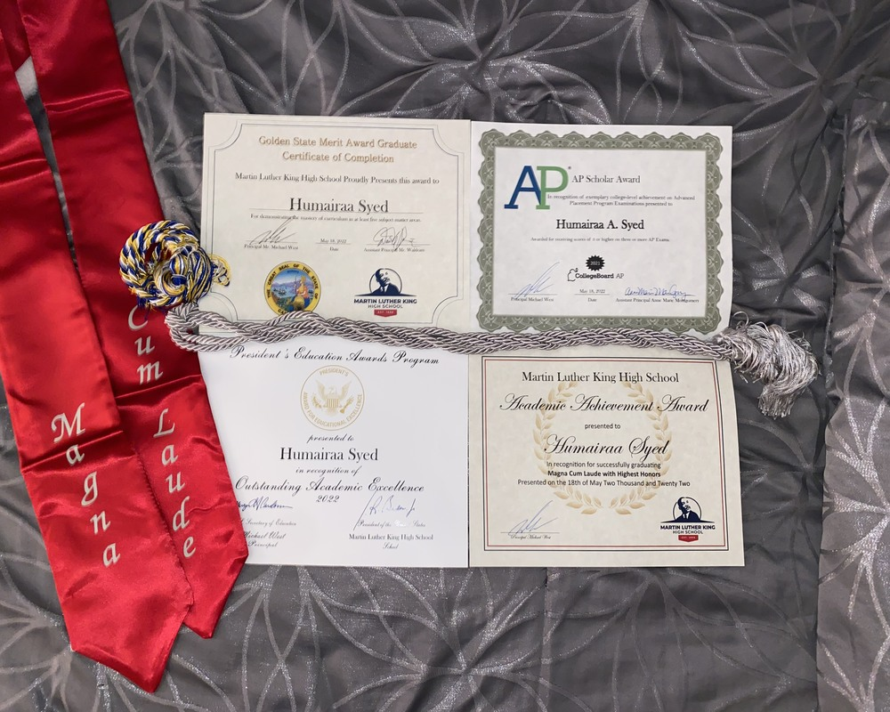

Humairaa Syed
Hi I’m Humairaa Syed. I’m a Pre-business undergraduate student at the University of California Riverside. Plan on graduating in 2026 with a Bachelor's Degree in Business Administration with a concentration in Analytics.
Growing up I’ve always strived to help people to the best of my abilities and wanted to continue to do that through my life. My overall career goal is to go into data analysis in UX Design, or User Experience Design, so I can help users with their experiences using products. Wanting to jumpstart my career goals, I engaged in many career focused activities to gain basic understanding and fundamentals. I first started with a Google UX Design course in which I learned the basics of UX design, how to build a portfolio, and about skills used to fit user needs. Following this course I learned how to do Python coding using a website called Replit. Dedicated to acquiring analytics I enrolled into Amazon Aws Data Analytics Fundamentals course which focused on the process of planning data analysis solutions to data problems. Continuing with Amazon products, I started to use Amazon AWS Cloud 9 in which code is used to build products, such as websites.
On the personal level, I was born in Riverside California where I spent my whole life. I have traveled to many different countries around the world and states inside of the United States. My pastime activities include watching sports such as basketball and football, spending time with my friends and family, and watching shows from around the world. I also enjoy playing sports, cooking and baking, and going on night drives while listening to music. I have an abundance of experience working and communicating with others. I’ve volunteered for organizations such as Sahaba Initiative, the Muslim Family Foundation, Helping Hand, and RCC Red Cross. In high school I was a Link Crew Leader, a Varsity athlete on the Girls Tennis Team, and Vice President of the King Kids Against Cancer club.
Experience
Sales Associate
• Cashier and customer service
• Fulfilling online orders and setting up rental accounts
• Restocking items and merchandise
Volunteer
• Setting up events and veneus
• Accomdating speakers and guests
• Selling t-shirts and snacks
Volunteer
• Setting up events and venues
• Distributing food/care packages
• Accomdating guests and speakers
• Babysitting kids at events
Education
University of California Riverside
Portfolio




 